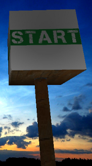
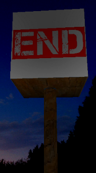

MAZE GAME - RULES

Goal :
You must go from the START display to the END display through the maze.
Controls :
Left button :
Move forward
Right button :
Jump
LOADING...

LOADING LEVEL
...
LEVEL :
1
TIME :
0
s
You win ! Congratulations !
Your time :